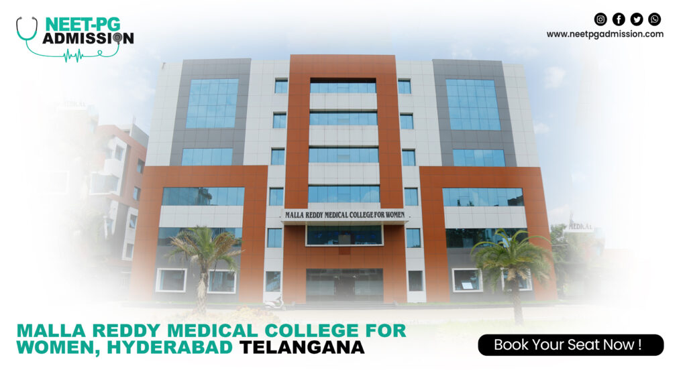

About Us
MRUH has a perspective plan to grow into a Center of Excellence through new initiatives by creating world class infrastructure, expanding international collaborations, developing innovative programs, establishing industrial tie-ups, recruiting well qualified and trained faculty, promoting the talent, nurturing the research and innovation and also fostering the outreach activities with sustainable fund flow. Home / About / University MRU_BuildingPhoto.jpg Malla Reddy University Malla Reddy University, Hyderabad (MRUH) is the only Private University under green field category established in the year 2020 As per Telangana State Private Universities Act No.13 of 2020 and G.O.Ms.No.14, Higher Education (UE) Department dt. 15.6.2020 was approved by the Government of Telangana State. Our focus is to address the emerging needs of Industry and Society. Malla Reddy University is a sponsored by Malla Reddy Educational Society (MRES) one of the unit of Malla Reddy Group of Institutions. MRUH has a perspective plan to grow into a Center of Excellence through new initiatives by creating world class infrastructure, expanding international collaborations, developing innovative programs, establishing industrial tie-ups, recruiting well qualified and trained faculty, promoting the talent, nurturing the research and innovation and also fostering the outreach activities with sustainable fund flow.
The campus spread over 100 acres of land with built-up space covering academic, administrative and amenities block with State of Art Infrastructural Facility. It has a cosmopolitan atmosphere to attract large number of student diversity from all corners of the globe. It creates an environment for access to Experienced Teaching Faculty who are well qualified with international exposure to nurture the students creative abilities for new innovations through knowledge partnerships. Our programs include New Age Technologies and Innovative Curriculum to educate our students to deal with the current developing world.